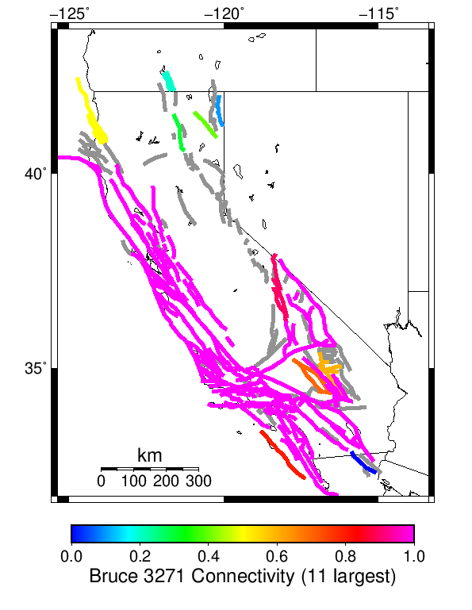

Multi Fault Rupture Comparisons
Subsections participate in a rupture if at least 20.0 % of its area ruptures
Catalog Details
Table Of Contents
Plausibility Filter Comparisons
Rupture Failure Percentages
(top)

1km Jump Count
(top)
Cumulant Magnitude
(top)
| Bruce 3271 | UCERF3 | Difference |
|---|
 |  | |
Fault Connectivity
(top)
| Bruce 3271 | UCERF3 |
|---|
|  |  |